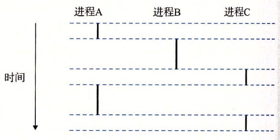

8.2 进程
异常是允许操作系统内核提供进程（process）概念的基本构造块，进程是计算机科学中最深刻、最成功的概念之一。
在现代系统上运行一个程序时，我们会得到一个假象，就好像我们的程序是系统中当前运行的唯一的程序一样。我们的程序好像是独占地使用处理器和内存。处理器就好像是无间断地一条接一条地执行我们程序中的指令。最后，我们程序中的代码和数据好像是系统内存中唯一的对象。这些假象都是通过进程的概念提供给我们的。
进程的经典定义就是一个执行中程序的实例。系统中的每个程序都运行在某个进程的上下文（context）中。上下文是由程序正确运行所需的状态组成的。这个状态包括存放在内存中的程序的代码和数据，它的栈、通用目的寄存器的内容、程序计数器、环境变量以及打开文件描述符的集合。
每次用户通过向 shell 输入一个可执行目标文件的名字，运行程序时，shell 就会创建一个新的进程，然后在这个新进程的上下文中运行这个可执行目标文件。应用程序也能够创建新进程，并且在这个新进程的上下文中运行它们自己的代码或其他应用程序。
关于操作系统如何实现进程的细节的讨论超出了本书的范围。反之，我们将关注进程提供给应用程序的关键抽象：
- 一个独立的逻辑控制流，它提供一个假象，好像我们的程序独占地使用处理器。
- 一个私有的地址空间，它提供一个假象，好像我们的程序独占地使用内存系统。让我们更深入地看看这些抽象。
8.2.1 逻辑控制流
即使在系统中通常有许多其他程序在运行，像它在独占地使用处理器。如果想用调试器单步执行程序，我们会看到一系列的程序计数器（PC）的值，这些值唯一地对应于包含在程序的可执行目标文件中的指令，或是包含在运行时动态链接到程序的共享对象中的指令。这个 PC 值的序列叫做逻辑控制流，或者简称逻辑流。
考虑一个运行着三个进程的系统，如图 8-12 所示。处理器的一个物理控制流被分成了三个逻辑流，每个进程一个。图 8 一每个竖直的条表示一个进程的逻辑流的一部分。在这个例子中，三个逻辑流的执行是交错的。进程 A 运行了一会儿，然后是进程 B 开始运行到完成。然后，进程 C 运行了一会儿，进程 A 接着运行直到完成。最后，进程 C 可以运行到结束了。
图 8-12 的关键点在于进程是轮流使用处理器的。每个进程执行它的流的一部分，然后被抢占（preempted）（暂时挂起），然后轮到其他进程。对于一个运行在这些进程之一的上下文中的程序，它看上去就像是在独占地使用处理器。唯一的反面例证是，如果我们精确地测量每条指令使用的时间，会发现在程序中一些指令的执行之间，CPU 好像会周期性地停顿。然而，每次处理器停顿，它随后会继续执行我们的程序，并不改变程序内存位置或寄存器的内容。

图 8-12 逻辑控制流。进程为每个程序提供了一种假象，好像程序在独占地使用处理器。每个竖直的条表示一个进程的逻辑控制流的一部分
8.2.2 并发流
计算机系统中逻辑流有许多不同的形式。异常处理程序、进程、信号处理程序、线程和 Java 进程都是逻辑流的例子。
一个逻辑流的执行在时间上与另一个流重叠，称为并发流（concurrent flow），这两个流被称为并发地运行。更准确地说，流 X 和 Y 互相并发，当且仅当 X 在 Y 开始之后和 Y 结束之前开始，或者 Y 在 X 开始之后和 X 结束之前开始。例如，图 8-12 中，进程 A 和 B 并发地运行，A 和 C 也一样。另一方面，B 和 C 没有并发地运行，因为 B 的最后一条指令在 C 的第一条指令之前执行。
多个流并发地执行的一般现象被称为并发（concurrency）。一个进程和其他进程轮流运行的概念称为多任务（multitasking）o 一个进程执行它的控制流的一部分的每一时间段叫做时间片（time slice）。因此，多任务也叫做时间分片（timeslicing）。例如，图 8-12 中，进程 A 的流由两个时间片组成。
注意，并发流的思想与流运行的处理器核数或者计算机数无关。如果两个流在时间上重叠，那么它们就是并发的，即使它们是运行在同一个处理器上。不过，有时我们会发现确认并行流是很有帮助的，它是并发流的一个真子集。如果两个流并发地运行在不同的处理器核或者计算机上，那么我们称它们为并行流（parallel flow），它们并行地运行（running in parallel），且并行地执行（parallel execution）。
练习题 8.1
考虑三个具有下述起始和结束时间的进程：
| 进程 | 起始时间 | 结束时间 |
|---|---|---|
| A | 0 | 2 |
| B | 1 | 4 |
| C | 3 | 5 |
对于每对进程，指出它们是否是并发地运行：
| 进程对 | 并发的？ |
|---|---|
| AB | |
| AC | |
| BC |
进程 A 和 B 是互相并发的，就像 B 和 C 一样，因为它们各自的执行是重叠的，也就是一个进程在另一个进程结束前开始。进程 A 和 C 不是并发的，因为它们的执行没有重叠；A 在 C 开始之前就结束了。
8.2.3 私有地址空间
进程也为每个程序提供一种假象，好像它独占地使用系统地址空间。在一台 n 位地址的机器上，地址空间是个可能地址的集合，0，1，⋯， 。进程为每个程序提供它自己的私有地址空间。一般而言，和这个空间中某个地址相关联的那个内存字节是不能被其他进程读或者写的，从这个意义上说，这个地址空间是私有的。
尽管和每个私有地址空间相关联的内存的内容一般是不同的，但是每个这样的空间都有相同的通用结构。比如，图 8-13 展示了一个 x86-64 Linux 进程的地址空间的组织结构。

地址空间底部是保留给用户程序的，包括通常的代码、数据、堆和栈段。代码段总是从地址 0x400000 开始。地址空间顶部保留给内核（操作系统常驻内存的部分）。地址空间的这个部分包含内核在代表进程执行指令时（比如当应用程序执行系统调用时）使用的代码、数据和栈。
8.2.4 用户模式和内核模式
为了使操作系统内核提供一个无懈可击的进程抽象，处理器必须提供一种机制，限制一个应用可以执行的指令以及它可以访问的地址空间范围。
处理器通常是用某个控制寄存器中的一个模式位（mode bit）来提供这种功能的，该寄存器描述了进程当前享有的特权。当设置了模式位时，进程就运行在内核模式中（有时叫做超级用户模式）。一个运行在内核模式的进程可以执行指令集中的任何指令，并且可以访问系统中的任何内存位置。
没有设置模式位时，进程就运行在用户模式中。用户模式中的进程不允许执行特权指令（privileged instruction），比如停止处理器、改变模式位，或者发起一个 I/。操作。也不允许用户模式中的进程直接引用地址空间中内核区内的代码和数据。任何这样的尝试都会导致致命的保护故障。反之，用户程序必须通过系统调用接口间接地访问内核代码和数据。
运行应用程序代码的进程初始时是在用户模式中的。进程从用户模式变为内核模式的唯一方法是通过诸如中断、故障或者陷入系统调用这样的异常。当异常发生时，控制传递到异常处理程序，处理器将模式从用户模式变为内核模式。处理程序运行在内核模式中，当它返回到应用程序代码时，处理器就把模式从内核模式改回到用户模式。
Linux 提供了一种聪明的机制，叫做 /proc 文件系统，它允许用户模式进程访问内核数据结构的内容。/proc 文件系统将许多内核数据结构的内容输出为一个用户程序可以读的文本文件的层次结构。比如，你可以使用 / proc 文件系统找出一般的系统属性，比如 CPU 类型（/proc/cpuinfo），或者某个特殊的进程使用的内存段（/proc/<process-id>/maps）。2.6 版本的 Linux 内核引入 /sys 文件系统，它输岀关于系统总线和设备的额外的低层信息。
8.2.5 上下文切换
操作系统内核使用一种称为上下文切换（context switch）的较高层形式的异常控制流来实现多任务。上下文切换机制是建立在 8.1 节中已经讨论过的那些较低层异常机制之上的。
内核为每个进程维持一个上下文（context）。上下文就是内核重新启动一个被抢占的进程所需的状态。它由一些对象的值组成，这些对象包括通用目的寄存器、浮点寄存器、程序计数器、用户栈、状态寄存器、内核栈和各种内核数据结构，比如描述地址空间的页表、包含有关当前进程信息的进程表，以及包含进程已打开文件的信息的文件表。
在进程执行的某些时刻，内核可以决定抢占当前进程，并重新开始一个先前被抢占了的进程。这种决策就叫做调度（scheduling），是由内核中称为调度器（scheduler）的代码处理的。当内核选择〜个新的进程运行时，我们说内核调度了这个进程。在内核调度了一个新的进程运行后，它就抢占当前进程，并使用一种称为上下文切换的机制来将控制转移到新的进程，上下文切换 1）保存当前进程的上下文，2）恢复某个先前被抢占的进程被保存的上下文，3）将控制传递给这个新恢复的进程。
当内核代表用户执行系统调用时，可能会发生上下文切换。如果系统调用因为等待某个事件发生而阻塞，那么内核可以让当前进程休眠，切换到另一个进程。比如，如果一个 read 系统调用需要访问磁盘，内核可以选择执行上下文切换，运行另外一个进程，而不是等待数据从磁盘到达。另一个示例是 sleep 系统调用，它显式地请求让调用进程休眠。一般而言，即使系统调用没有阻塞，内核也可以决定执行上下文切换，而不是将控制返回给调用进程。
中断也可能引发上下文切换。比如，所有的系统都有某种产生周期性定时器中断的机制，通常为每 1 毫秒或每 10 毫秒。每次发生定时器中断时，内核就能判定当前进程已经运行了足够长的时间，并切换到一个新的进程。
图 8-14 展示了一对进程 A 和 B 之间上下文切换的示例。在这个例子中，进程 A 初始运行在用户模式中，直到它通过执行系统调用 read 陷入到内核。内核中的陷阱处理程序请求来自磁盘控制器的 DMA 传输，并且安排在磁盘控制器完成从磁盘到内存的数据传输后，磁盘中断处理器。

磁盘取数据要用一段相对较长的时间（数量级为几十毫秒），所以内核执行从进程 A 到进程 B 的上下文切换，而不是在这个间歇时间内等待，什么都不做。注意在切换之前，内核正代表进程 A 在用户模式下执行指令（即没有单独的内核进程）。在切换的第一部分中，内核代表进程 A 在内核模式下执行指令。然后在某一时刻，它开始代表进程 B（仍然是内核模式下）执行指令。在切换之后，内核代表进程 B 在用户模式下执行指令。
随后，进程 B 在用户模式下运行一会儿，直到磁盘发出一个中断信号，表示数据已经从磁盘传送到了内存。内核判定进程 B 已经运行了足够长的时间，就执行一个从进程 B 到进程 A 的上下文切换，将控制返回给进程 A 中紧随在系统调用 read 之后的那条指令。进程 A 继续运行，直到下一次异常发生，依此类推。